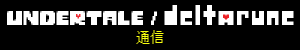 |
ん…？何か聞こえる… この音は…真夏の太陽！？ |
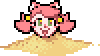 |
夏です！！アツい季節です！！！ |
今回も、お知らせすることはあんまりないので、サックリ短めにお届けしますよ。みんな、夏休みの予定とかあるでしょ？「夏休み？なにそれ、おいしいの？」っていう人は…がんばって！！ |
そうそう、このメルマガには毎回いろんなスプライトを載せてますけど、ぜ～んぶ、テミーの作品ですよ！ |
|

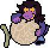 |
前回お伝えしたとおり、今はChapter 3の制作に力を注いでるところなんですが、チームの何人かは、その後のチャプターの断片的な要素（弾幕パターンとか、パズルとか）の制作にも取りかかってます。 |
Chapter 3は、ついに最終エリアのフィールドの制作に入りました。Chapter 1と2の、カルタス城やクイーンの館に相当するエリアですね。これが完成すれば、いよいよこのチャプターを通しプレイできるようになります（ちなみに、このエリアのBGMは2016年に作りました…）。 |
Chapter 3にはとにかくいろんな要素が詰まっていて、いったいどんな仕上がりになるのか、僕もなかなか想像がつかなかったんですが、かなり全体像が見えてきたので、あとはデコボコしてるところをローラー車できれいにならすだけです。場合によっては、何か足したり、修正したり、いらないものをカットしたりするかもしれないけど…大半はほぼ仕上がってるので、そこまで大変な作業にはならないはず。 |
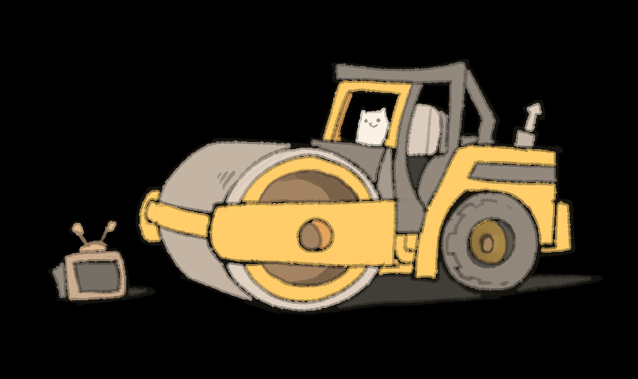 |
みなさんも察しがついてると思いますが、今回のチャプターは、だいぶ変化球になりそうです。ちょっと変わったゲームプレイ要素が中心で、ストーリーにはそこまで重点を置いたものにはならない予定です。正直、「こんなに突拍子もなくて大丈夫かな」って、自分でもちょっと心配なんですけど…でも、目先を変えた試みができたと思います！ |
Chapter 4は、もっと「いつもの感じ」のチャプターになりますよ！ |
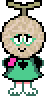 |
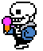 |
夏と言ったら、アイスクリームですよねー。 |
それで思い出したんですけど、『UNDERTALE』には、たぶんまだどこでも話したことがない、未公開コンテンツがあります。 |
知ってる人はほんの何人かで、その人たちもたぶん忘れてると思うんですけど、最終的にはボツになった「アイスクリームを食べるサンズ」のスプライトがあるんです。 |
なんでそんなのを作ったかというと… |
当初は、ゲームスタートから一定の時間内にサンズの回廊に着いた場合だけ再生される、特別なシーンを入れようと思ってたんです。要は、タイムアタックプレイヤーだけが見られるシーンですね。 |
で、今回、そのシーンを再現してみました。こちらです。 |
|
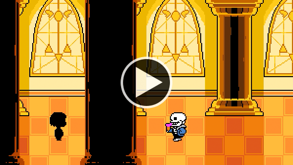 ビデオを見る » |
さすがに、「これはないな」と思ってボツにしました。コンセプトとしては、おもしろいと思いますけどね。 |
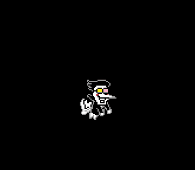 |
いつもはここで、別の音ゲーなんかに提供したオリジナル曲の宣伝をするんですが、今回は… |
…僕が作った曲が、ボツになってしまいました。 |
ちょっと説明させてもらうと…僕は曲を作るとき、ストーリーとか、キャラクターとか、ゲームのワンシーンとか、そういうものをイメージしないと、持てる力のすべてを発揮するのが難しいんですよね… 題材に心を強くひかれると、すごくいい曲ができるんですけど、単に「音ゲー用の曲を作ってほしい」っていうご要望には、意外と応えるのが難しいんです。 |
なので、何か心を強くひかれる題材をイメージしようと思って、「イヌたちがつぎつぎとデカいピコピコハンマーで頭をひっぱたかれる工場」の曲を作りました。 |
ところがなんと！クライアントさんのイメージとは、ちょーっと違ったみたいで… まあでも、そうですよね… どういう曲がいいのか、説明聞く前に作ったから… |
だけどこの曲は、いつかちゃんと完成させたいなと思います。そしてもちろん、ご依頼いただいた音ゲー用の曲も、別のものを全力で作りますよ！ |
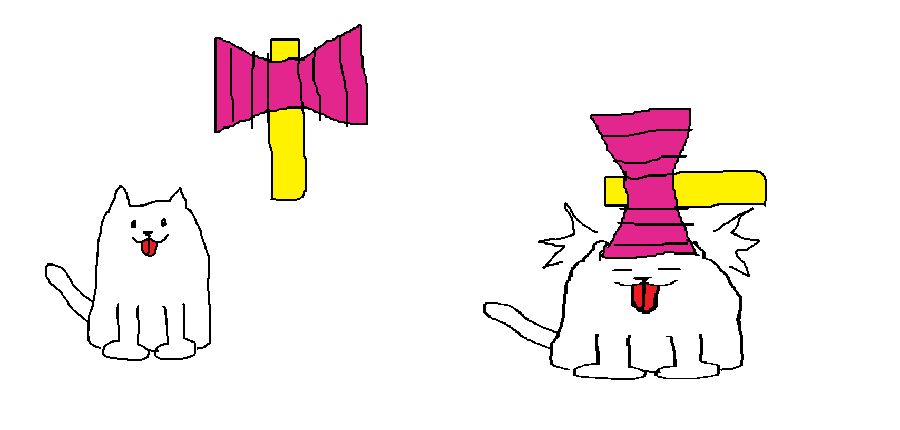 |
「THE GREATEST LIVING SHOW」のMVの再生回数が、100万回を超えました！そのうち95%はたぶん僕が回してると思うので、残りの5%に貢献してくれた、このメルマガの読者のみなさんに感謝です。 |
もう一度観たい方のために、またリンク貼っておきますね！（注意：刺激の強い映像が含まれます） |

ビデオを見る » |
それと、前回お話したアートブックですけど、現在鋭意製作中です！サンプルをお見せしますね。 |
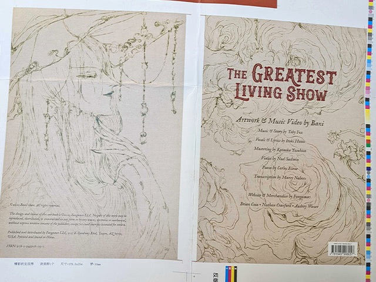 |
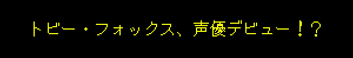 |
今から1年ぐらい前、『ぼくらベビーベアーズ（原題：We Baby Bears）』という子ども向けアニメの製作チームから、声優としてゲスト出演してほしいという依頼をいただきました。そして、その僕の出演回が、ついに先日、放送されました！ |
僕が演じたのは、「Polly's New Crew」という回に登場する、シャイなスケルトン「Jared」です。セリフは少しだけだったけど、アニメの声優をやるのはずっと夢だったので、こんなまたとない機会を断る理由はありませんでした。プロの現場での音声収録はすごく楽しかったし、貴重な経験をさせてもらいました。 |
地声とは少し違った感じに挑戦してみたんですけど…僕の声は僕のゲームのあちこちに使われてるので、どんな声かは、みんなもう知ってますよね？？ |
たとえば、タスクマネージャーとクイーンの声は、全部僕だし… |
まあいいや。その件については、これ以上話すことはないです。 |
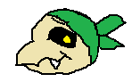 |
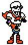 |
今季号のインタビューは、パピルスさんです！ |
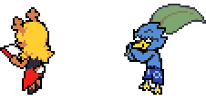 |
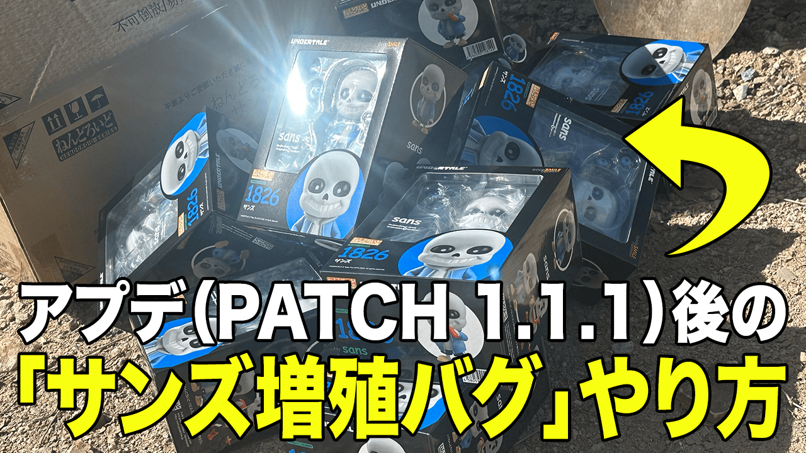 |
 |
|
読んでくれてありがとうございました！もう秋だなんて、信じられます！？じゃ、また次号で！ |
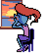 |